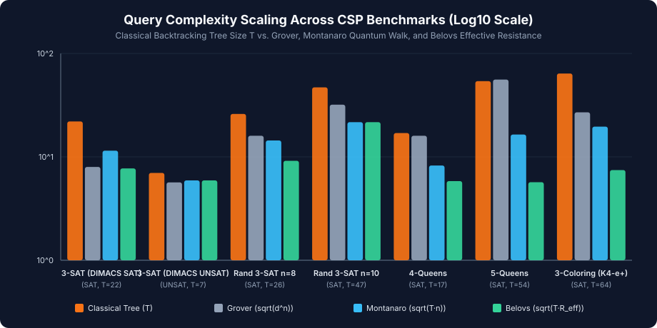
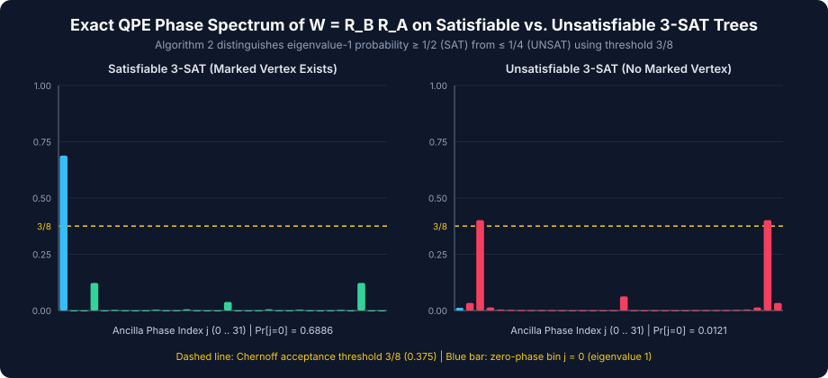
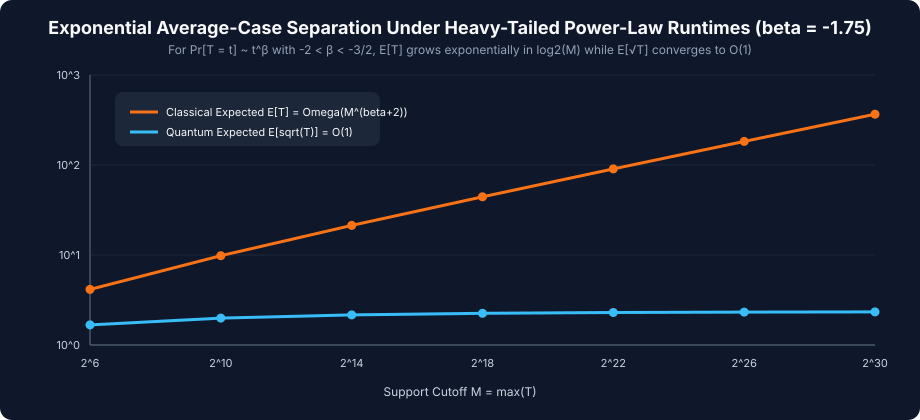

Quantum Walk Speedup of Backtracking Algorithms
Exact statevector simulation, Belovs' electrical network resistance analysis, Quantum Phase Estimation (QPE), and heavy-tailed average-case complexity for accelerating classical backtracking solvers such as DPLL, N-Queens, and Graph Coloring.
Interactive Quantum Walk & QPE Simulator
Runs Montanaro's exact coinless quantum walk W = RB RA directly in your browser. Select a preset backtracking tree or click any non-root node in the tree to toggle it as a marked solution—watch Belovs' effective resistance Reff(r, M) and the exact QPE phase spectrum update live.
Click any non-root vertex to toggle marked (emerald = solution, cyan = root, slate = unmarked). Highlighted edges carry unit electrical current from root r to M.
Exact QPE distribution over M = 2s phase bins. Dashed yellow line marks the 3/8 (0.375) Chernoff threshold separating SAT (≥ 1/2) from UNSAT (≤ 1/4).
Heavy-Tailed Average-Case Separation Explorer
Explore Montanaro Section 4: when classical backtracking tree sizes follow a power-law distribution Pr[T = t] ∝ tβ with −2 < β < −3/2, the expected classical runtime E[T] = Ω(Mβ+2) grows exponentially in log2(M) while the expected quantum runtime E[√T] converges to O(1).
Empirical Statevector Benchmarks
Reproducible results generated by benchmarks/run_benchmarks.py across DIMACS 3-SAT, random 3-SAT near the
phase transition (α ≈ 4.2), N-Queens, and Graph 3-Coloring. Every detection and binary-search run matches ground truth.
| Benchmark | Status | Tree Size T | R_eff(r, M) | Grover √(dⁿ) | Montanaro √(Tn) | Belovs √(T·R_eff) | QPE Pr[0ˢ] | ||W|φ'⟩−|φ'⟩||₂ |
|---|
Generated Publication Figures
All three vector figures are generated directly from the zero-dependency Python benchmark pipeline and validated in CI.
Query Complexity Scaling Across CSP Benchmarks

Exact QPE Phase Spectrum: SAT vs. UNSAT Separation

Heavy-Tailed Power-Law Runtime Separation (β = −1.75)

Technical Report & Complexity Landscape
The companion report completes the full theoretical study—from Belovs' electrical networks and first-principles QPE proofs to Jarret–Wan effective-resistance estimation (2018), Ambainis–Kokainis tree-size estimation (2017), and QSVT reformulations (Gilyén et al., 2019; Aoki & Kawachi, 2026).
| Algorithm | Query Complexity | Key Requirement / Advance |
|---|---|---|
| Classical Backtracking (Alg. 1) | O(T) | Explores all T valid partial assignments |
| Grover's Unstructured Search | O(√(dⁿ)) | Ignores partial-assignment pruning |
| Montanaro Detection (Theorem 1) | O(√(Tn) log(1/δ)) | Decides existence via QPE on W = R_B R_A |
| Montanaro General Search (Theorem 2) | O(√T · n³/² log n log(1/δ)) | Unknown T via exponential doubling + subtree descent |
| Montanaro Unique-Solution (Sec. 2.2) | O(√(Tn) log³ n log(1/δ)) | Samples path vertices from QPE-prepared |φ'⟩ |
| Jarret & Wan (Phys. Rev. A, 2018) | Õ(√(T · R_max)) | Amplitude estimation of effective resistance for unknown k ≥ 1 |
| QSVT Reformulation (Aoki & Kawachi, 2026) | Deg. O(√(Tn)) filter | Singular-value-1 polynomial filter on D_T = Π_A Π_B |